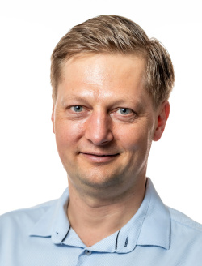
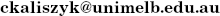

Cezary Kaliszyk
- Professor in Theoretical Computer Science at the University of Melbourne
- Email: 
- (GPG key)
- Office hours: Fridays 10:00-11:00
(ask online before; other times also possible)
Looking for PhD students:
- interested in automated reasoning, formalized mathematics, learning for reasoning, proof guidance and related topics
- Contact me if you are interested
- For good candidates scholarships are available!
(current students)
Research:
- Foundations of Computer Science, Formal Methods, Learning for Reasoning
- ERC project "FormalWeb3" PI
(all projects)
Publications:
- Karol Pąk, Cezary Kaliszyk. Conway Normal Form: Bridging Approaches for Comprehensive Formalization of Surreal Numbers. ITP, 2024
- Stanisław Purgał, David Cerna, Cezary Kaliszyk.
Differentiable Inductive Logic Programming in High-Dimensional Space.
IJCLR, 2024
[ preprint ]
- Liao Zhang, David Cerna, Cezary Kaliszyk.
Learning Rules Explaining Interactive Theorem Proving Tactic Prediction.
IJCLR, 2024
[ preprint ]
- Johannes Niederhauser and Chad E. Brown and Cezary Kaliszyk. Tableaux for Automated Reasoning in Dependently-Typed Higher-Order Logic. IJCAR, 2024
- Kristina Aleksandrova and Jan Jakubův and Cezary Kaliszyk. Prover9 Unleashed: Automated Configuration for Enhanced Proof Discovery. LPAR, 2024
- Daniel Ranalter and Chad E. Brown and Cezary Kaliszyk. Experiments with Choice in Dependently-Typed Higher-Order Logic. LPAR, 2024
- L. Blaauwbroek and D. Cerna and T. Gauthier and J. Jakubuv and C. Kaliszyk and M. Suda and J. Urban. Learning Guided Automated Reasoning: A Brief Survey. Logics and Type Systems in Theory and Practice, 2024
- Julian Parsert, Chad Brown, Mikolas Janota and Cezary Kaliszyk. Experiments on Infinite Model Finding in SMT Solving. LPAR 2023.
- Cezary Kaliszyk and Karol Pąk. Combining Higher-Order Logic with Set Theory Formalizations. JAR 2023.
- J. Jakubuv, K. Chvalovský, Z. Goertzel, C. Kaliszyk, M. Olsak, B. Piotrowski, S. Schulz, M. Suda, J. Urban. MizAR 60 for Mizar 50. ITP 2023.
- Jan Jakubuv and Cezary Kaliszyk. VizAR: Visualization of Automated Reasoning Proofs. CICM 2023.
- Liao Zhang, Lasse Blauwbroek, Cezary Kaliszyk, Josef Urban Learning Proof Transformations and Its Applications in Interactive Theorem Proving. FroCoS 2023.
2022
- Chad Brown and Cezary Kaliszyk. Lash 1.0 (System Description). IJCAR 2022.
- Stanisław Purgał, David Cerna, Cezary Kaliszyk. Learning Higher-Order Programs without Meta-Interpretive Learning. IJCAI 2022.
- Stanisław Purgał and Cezary Kaliszyk. Adversarial Learning to Reason in an Arbitrary Logic. FLAIRS 2022.
- Karol Pąk and Cezary Kaliszyk. Formalizing a diophantine description of the set of primes (short paper). ITP 2022.
- Zar Goerzel, Jan Jakubuv, Cezary Kaliszyk, Mirek Olsak, Jelle Piepenbroek, Josef Urban. The Isabelle Enigma. ITP 2022.
- Grzegorz Prusak, Cezary Kaliszyk. Lazy Paramodulation in Practice. PAAR 2022.
- Chad Brown, Cezary Kaliszyk, Thibault Gauthier, Josef Urban. Proofgold: Blockchain for Formal Methods. FMBC 2022.
2021
- Stanisław Purgał, Julian Parsert and Cezary Kaliszyk. A study of continuous vector representations for theorem proving. J. Logic and Computation, 2021.
- Thibault Gauthier, Cezary Kaliszyk, Josef Urban, Ramana Kumar, Michael Norrish. TacticToe: Learning to Prove with Tactics. J. Automated Reasoning, 2021.
- Michael Färber, Cezary Kaliszyk, and Josef Urban Machine Learning Guidance for Connection Tableaux. J. Automated Reasoning, 2021.
- Dennis Müller and Cezary Kaliszyk. Disambiguating Symbolic Expressions in Informal Documents. ICLR 2021.
- L. Zhang, L. Blaauwbroek, B. Piotrowski, P. Černý, C. Kaliszyk, J. Urban. Online Machine Learning Techniques for Coq: A Comparison. CICM 2021.
- Q. Wang and C. Kaliszyk. JEFL: Joint Embedding of Formal Proof Libraries. FroCoS 2021.
- Z. Zombori, A. Csiszárik, H. Michalewski, C. Kaliszyk, J. Urban. Towards Finding Longer Proofs. Tableaux 2021.
2020
- Jan Jakubův and Cezary Kaliszyk. Relaxed Weighted Path Order in Theorem Proving. MCS 2020.
- Miroslav Olšák, Cezary Kaliszyk, Josef Urban. Property Invariant Embedding for Automated Reasoning. ECAI 2020.
- Qingxiang Wang, Chad Brown, Cezary Kaliszyk and Josef Urban. Exploration of neural machine translation in autoformalization of mathematics in Mizar. CPP 2020.
- Cezary Kaliszyk and Florian Rabe. A Survey of Languages for Formalizing Mathematics. CICM 2020.
- Julian Parsert, Stephanie Autherith and Cezary Kaliszyk. Property Preserving Embedding of First-order Logic. GCAI 2020.
- Burak Ekici and Cezary Kaliszyk. Mac Lane’s Comparison Theorem for the Kleisli Construction Formalized in Coq. Mathematics in Computer Science, 2020.
2019
- Thibault Gauthier and Cezary Kaliszyk. Aligning Concepts across Proof Assistant Libraries. Journal of Symbolic Computation. 2019.
- Cezary Kaliszyk and Karol Pąk. Declarative Proof Translation. 10th International Conference on Interactive Theorem Proving (ITP 2019), volume 141 of LIPIcs, pp. 35:1-35:7, 2019.
- Chad Brown, Cezary Kaliszyk, and Karol Pąk. Higher-order Tarski Grothendieck as a Foundation for Formal Proof. 10th International Conference on Interactive Theorem Proving (ITP 2019), volume 141 of LIPIcs, pp. 9:1-9:16, 2019.
- Michael Färber and Cezary Kaliszyk. Certification of Nonclausal Connection Tableaux Proofs. 28th International Conference on Automated Reasoning with Analytic Tableaux and Related Methods (TABLEAUX 2019), volume 11714 of LNCS, pp. 21-38, 2019.
- Chad Brown, Thibault Gauthier, Cezary Kaliszyk, Geoff Sutcliffe, and Josef Urban. GRUNGE: A Grand Unified ATP Challenge. The 27th International Conference on Automated Deduction (CADE 2019), volume 11716 of LNCS, pp. 123--141, 2019.
- Cezary Kaliszyk and Karol Pąk. Semantics of Mizar as an Isabelle Object Logic. Journal of Automated Reasoning. 63(3): 557-595, 2019.
- B. Piotrowski, J. Urban, C. Brown, and C. Kaliszyk. Can Neural Networks Learn Symbolic Rewriting? Learning and Reasoning with Graph-Structured Representations, ICML 2019 Workshop, 2019.
2018
- Cezary Kaliszyk, Josef Urban, Henryk Michalewski, Mirek Olsák. Reinforcement Learning of Theorem Proving. NeurIPS 2018.
- Łukasz Czajka and Cezary Kaliszyk. Hammer for Coq: Automation for Dependent Type Theory. Journal of Automated Reasoning, 61(1-4). pp. 423‒453, 2018.
- Jan Jakubův and Cezary Kaliszyk. Towards a Unified Ordering for Superposition-Based Automated Reasoning. 6th International Conference on Mathematical Software (ICMS 2018), pp. 245-254. 2018.
- Łukasz Czajka, Burak Ekici, and Cezary Kaliszyk. Concrete Semantics with Coq and CoqHammer. 11th International Conference on Intelligent Computer Mathematics (CICM 2018), pp. 53-58. 2018.
- Cezary Kaliszyk and Karol Pąk. Isabelle Import Infrastructure for the Mizar Mathematical Library. 11th International Conference on Intelligent Computer Mathematics (CICM 2018), pp. 131-146. 2018.
- Qingxiang Wang, Cezary Kaliszyk, Josef Urban. First Experiments with Neural Translation of Informal to Formal Mathematics. 11th International Conference on Intelligent Computer Mathematics (CICM 2018), pp. 255-270. 2018.
- Julian Parsert and Cezary Kaliszyk. Towards Formal Foundations for Game Theory. 9th International Conference on Interactive Theorem Proving (ITP 2018), pp. 495--503. 2018.
- Julian Parsert and Cezary Kaliszyk. Formal Microeconomic Foundations and the First Welfare Theorem. 7th ACM Conference on Certified Programs and Proofs (CPP'18), ACM, pp. 91‒101, 2018.
- Łukasz Czajka and Cezary Kaliszyk. CoqHammer: Strong Automation for Program Verification in Coq. CoqPL 2018.
2017
- Tom Hales et al. A formal proof of the Kepler conjecture. Forum of Mathematics, Pi journal (5), 2017.
- Cezary Kaliszyk, Josef Urban, and Jiřı́ Vyskočil. Automating Formalization by Statistical and Semantic Parsing of Mathematics. 8th International Conference on Interactive Theorem Proving (ITP 2017), volume 10499 of LNCS, pp. 12--27. 2017.
- Michael Färber, Cezary Kaliszyk, and Josef Urban. Monte Carlo Tableau Proof Search. 26th International Conference on Automated Deduction (CADE 2017), volume 10395 of LNCS, pp. 563‒579. 2017.
- Cezary Kaliszyk, François Chollet, and Christian Szegedy.
HolStep: A Machine Learning Dataset for Higher-order Logic Theorem Proving.
ICLR 2017, accepted.
[ BibTeX | PDF (preprint) ]
- Thibault Gauthier, Cezary Kaliszyk, and Josef Urban. TacticToe: Learning to reason with HOL4 Tactics. 21st International Conference on Logic for Programming, Artificial Intelligence, and Reasoning (LPAR 2017), volume 46 of EPiC, pp. 125‒143. 2017.
- Sarah Loos, Geoffrey Irving, Christian Szegedy, and Cezary Kaliszyk. Deep Network Guided Proof Search. 21st International Conference on Logic for Programming, Artificial Intelligence, and Reasoning (LPAR 2017), volume 46 of EPiC, pp. 85‒105. 2017.
- Cezary Kaliszyk and Karol Pąk. Isabelle Formalization of Set Theoretic Structures and Set Comprehensions. International Conference on Mathematical Aspects of Computer and Information Sciences (MACIS 2017), volume 10693 of LNCS, pp. 163–178. 2017.
- Cezary Kaliszyk and Karol Pąk. Progress in the Independent Certification of Mizar Mathematical Library in Isabelle Federated Conference on Computer Science and Information Systems (FedCSIS 2017), pp. 227-236. 2017.
- Cezary Kaliszyk and Karol Pąk. Presentation and Manipulation of Mizar Properties in an Isabelle Object Logic. 10th International Conference on Intelligent Computer Mathematics (CICM 2017), volume 10383 of LNCS, pp. 193‒207. 2017.
- Dennis Müller, Thibault Gauthier, Cezary Kaliszyk, Michael Kohlhase, and Florian Rabe Classification of Alignments between Concepts of Formal Mathematical Systems. 10th International Conference on Intelligent Computer Mathematics (CICM 2017), volume 10383 of LNCS, pp. 83‒98. 2017.
- Cezary Kaliszyk, Josef Urban, Jirí Vyskocil. System Description: Statistical Parsing of Informalized Mizar Formulas. 19th International Symposium on Symbolic and Numeric Algorithms for Scientific Computing (SYNASC'17), IEEE, pp. 169‒172, 2017.
2016
- Jasmin Blanchette, David Greenaway, Cezary Kaliszyk, Daniel Kühlwein, and Josef Urban. A Learning-Based Fact Selector for Isabelle/HOL. Journal of Automated Reasoning, 57(3), pp. 219‒244, 2016.
- Hammering towards QED. Journal of Formalized Reasoning, 9(1):101‒148, 2016.
- Towards Formal Proof Metrics. Proc. 19th International Conference on Fundamental Approaches to Software Engineering (FASE'16), volume 9633 of LNCS, pp. 325‒341, 2016.
- What’s in a Theorem Name? Proc. 7h Conference on Interactive Theorem Proving (ITP'16), volume 9807 of LNCS, pp. 459‒465, 2016.
- Towards a Mizar Environment for Isabelle: Foundations and Language. 5th ACM Conference on Certified Programs and Proofs (CPP'16), ACM, pp. 58‒65, 2016.
- Wikis and Collaborative Systems for Large Formal Mathematics. Semantic Web Collaborative Spaces - Revised Selected and Invited Papers, volume 9507 of LNCS, pp. 35‒52, 2016.
- TH1: The TPTP Typed Higher-Order Form with Rank-1 Polymorphism. 5th Workshop on Practical Aspects of Automated Reasoning (PAAR'16), volume 1635 of CEUR-WS, pp. 41-55, 2016.
- No Choice: Reconstruction of First-order ATP Proofs without Skolem Functions. 5th Workshop on Practical Aspects of Automated Reasoning (PAAR'16), volume 1635 of CEUR-WS, pp. 23-31, 2016.
- A Standard for Aligning Mathematical Concepts. 9th Conference on Intelligent Computer Mathematics Work in Progress (CICM-WiP'16), volume 1785 of CEUR-WS, pp. 229-244, 2016.
- Initial Experiments with Statistical Conjecturing over Large Formal Corpora. 9th Conference on Intelligent Computer Mathematics Work in Progress (CICM-WiP'16), volume 1785 of CEUR-WS, pp. 219-228, 2016.
- Goal Translation for a Hammer for Coq. 1st International Workshop on Hammers for Type Theories (HaTT 2016), volume 210 of EPTCS, pp. 13‒20, 2016.
2015
- MizAR 40 for Mizar 40. Journal of Automated Reasoning, 55(3), pp. 245‒256, 2015.
- Learning-assisted Theorem Proving with Millions of Lemmas. Journal of Symbolic Computation, 69, pp. 109‒128, 2015.
- HOL(y)Hammer: Online ATP Service for HOL Light. Mathematics in Computer Science, 9(1), pp. 5‒22, 2015.
- Learning To Parse on Aligned Corpora. 6h Conference on Interactive Theorem Proving (ITP'15), volume 9236 of LNCS, pp. 227‒233, 2015.
- Lemmatization for Stronger Reasoning in Large Theories. Proc. 10th International Symposium on Frontiers of Combining Systems (FroCoS'15), volume 9322 of LNCS, pp. 341‒356, 2015.
- Random Forests for Premise Selection. 10th International Symposium on Frontiers of Combining Systems (FroCoS'15), volume 9322 of LNCS, pp. 325‒340, 2015.
- Efficient Low-level Connection Tableaux. Automated Reasoning with Analytic Tableaux and Related Methods (TABLEAUX'15), volume 9323 of LNCS, pp. 102‒111, 2015.
- Certified Connection Tableaux Proofs for HOL Light and TPTP. 4th Conference on Certified Programs and Proofs (CPP'15), ACM, pp. 59‒66, 2015.
- Premise Selection and External Provers for HOL4. 4th Conference on Certified Programs and Proofs (CPP'15), ACM, pp. 49‒57, 2015.
- Efficient Semantic Features for Automated Reasoning over Large Theories. 24th International Joint Conference on Artificial Intelligence (IJCAI'15), AAAI, pp. 3084‒3090, 2015.
- System Description: E.T. 0.1. 25th International Conference on Automated Deduction (CADE'15), volume 9195 of LNCS, pp. 389‒398, 2015.
- Formalizing Physics: Automation, Presentation and Foundation Issues. 8th Conference on Intelligent Computer Mathematics (CICM'15), volume 9150 of LNCS, pp. 288‒295, 2015.
- FEMaLeCoP: Fairly Efficient Machine Learning Connection Prover. Logic for Programming, Artificial Intelligence, and Reasoning (LPAR'15), volume 9450 of LNCS, pp. 88‒96, 2015.
- Sharing HOL4 and HOL Light proof knowledge Logic for Programming, Artificial Intelligence, and Reasoning (LPAR'15), volume 9450 of LNCS, pp. 372‒386, 2015.
- Metis-based Paramodulation Tactic for HOL Light 1st Global Conference on Artificial Intelligence (GCAI'15), volume 36 of EPiC, pp. 127‒136, 2015.
- Improving Statistical Linguistic Algorithms for Parsing Mathematics. 11th International Workshop on the Implementation of Logics (IWIL'15), volume 40 of EPiC, pp. 27-36, 2016.
2014
-
Learning-assisted Automated Reasoning with Flyspeck.
Journal of Automated Reasoning, 53(2), pp. 173‒213, 2014.
[ BibTeX | PDF (preprint) ]
- Initial Experiments with TPTP-style Automated Theorem Provers on ACL2 Problems. 12th International Workshop on the ACL2 Theorem Prover and its Applications (ACL2'14), EPTCS, 152, pp. 77‒85, 2014.
- Machine Learning of Coq Proof Guidance: First Experiments. 6th International Symposium on Symbolic Computation in Software Science (SCSS'14), volume 30 of EPiC, pp. 27‒34, 2014.
- Beagle as a HOL4 external ATP method. 4th Workshop on Practical Aspects of Automated Reasoning (PAAR'14), volume 31 of EPiC, pp. 50‒59, 2015.
- Machine Learner for Automated Reasoning 0.4 and 0.5. 4th Workshop on Practical Aspects of Automated Reasoning (PAAR'14), volume 31 of EPiC, pp. 60‒66, 2015.
- Towards Knowledge Management for HOL Light. 7th Conference on Intelligent Computer Mathematics (CICM'14), volume 8543 of LNCS, pp. 357‒372, 2014.
- Matching concepts across HOL libraries. 7th Conference on Intelligent Computer Mathematics (CICM'14), volume 8543 of LNCS, pp. 267‒281, 2014.
- Developing Corpus-based Translation Methods between Informal and Formal Mathematics: Project Description. 7th Conference on Intelligent Computer Mathematics (CICM'14), volume 8543 of LNCS, pp. 435‒439, 2014.
2013
- Lemma Mining over HOL Light. 19th International Conference on Logic for Programming, Artificial Intelligence, and Reasoning (LPAR'13), volume 8312 of LNCS, pp. 503‒517. 2013.
- Automated Reasoning Service for HOL Light. 6th Conference on Intelligent Computer Mathematics (CICM'13), volume 7961 of LNCS, pp. 120‒135. 2013.
- Formal Mathematics on Display: A Wiki for Flyspeck. 6th Conference on Intelligent Computer Mathematics (CICM'13), volume 7961 of LNCS, pp. 152‒167, 2013.
- PRocH: Proof Reconstruction for HOL Light. 24th International Conference on Automated Deduction (CADE'13), volume 7898 of LNCS, pp. 267‒274, 2013.
- Scalable LCF-style proof translation. 4th International Conference on Interactive Theorem Proving (ITP'13), volume 7998 of LNCS, pp. 51‒66, 2013.
- MaSh: Machine Learning for Sledgehammer. 4th International Conference on Interactive Theorem Proving (ITP'13), volume 7998 of LNCS, pp. 35‒50, 2013.
- Communicating Formal Proofs: The Case of Flyspeck. 4th International Conference on Interactive Theorem Proving (ITP'13), volume 7998 of LNCS, pp. 451‒456, 2013.
- Initial Experiments on Deriving a Complete HOL Simplification Set. 3rd International Workshop on Proof Exchange for Theorem Proving (PxTP'13), volume 14 of EPiC, pp. 77‒86, 2013.
- Stronger Automation for Flyspeck by Feature Weighting and Strategy Evolution. 3rd International Workshop on Proof Exchange for Theorem Proving (PxTP'13), volume 14 of EPiC, pp. 87‒95, 2013.
2012
- General Bindings and Alpha-Equivalence in Nominal Isabelle. Logical Methods in Computer Science, 8(2):1‒35, 2012.
- Algebraic Analysis of Huzita's Origami Operations and their Extensions. 9th International Workshop on Automated Deduction in Geometry (ADG'12), volume 7993 of LNCS, pp. 143‒160, 2012.
- Initial Experiments with External Provers and Premise Selection on HOL Light Corpora. Third Workshop on Practical Aspects of Automated Reasoning (PAAR'12), volume 21 of EPiC, pp. 72‒81, 2012.
2011
- Reasoning about constants in Nominal Isabelle, or how to formalize the second fixed point theorem. First International Conference on Certified Programs and Proofs (CPP'11), volume 7086 of LNCS, pp. 87‒102, 2011.
- Quotients revisited for Isabelle/HOL. 26th ACM Symposium on Applied Computing (SAC'11), pp. 1639‒1644. ACM, 2011.
- General bindings and alpha-equivalence in Nominal Isabelle. 20th European Symposium on Programming (ESOP'11), volume 6602 of LNCS, pp. 480‒500, 2011.
- Proof assistant decision procedures for formalizing origami. 4th Conference on Intelligent Computer Mathematics (CICM'11), volume 6824 of LNCS, 2011.
2010 and before
- Cezary Kaliszyk. Counting derangements, counting non bijective functions and the birthday problem. Formalized Mathematics, 18(4):197‒200, Mizar Mathematical Library, 2010.
- Walther Neuper, Cezary Kaliszyk, and Florian Haftmann. Ctp-based programming languages. Considerations about an experimental design. ACM SIGSAM International Workshop on Programming Languages for Mechanized Mathematics Systems (PLMMS'10), volume 44[1/2] of SIGSAM Bull., pp. 27‒41. ACM, 2010.
- Maxim Hendriks, Cezary Kaliszyk, Femke van Raamsdonk, and Freek Wiedijk. Teaching logic using a state-of-the-art proof assistant. Acta Didactica Napocensia, 3(2):35‒48, June 2010.
- Cezary Kaliszyk and Russell O'Connor. Computing with classical real numbers. Journal of Formalized Reasoning, 2(1):27‒39, 2009.
- Cezary Kaliszyk and Freek Wiedijk. Merging procedural and declarative proof. Types for Proofs and Programs International Conference (TYPES'08), volume 5497 of LNCS, pp. 203‒219. 2008.
- Cezary Kaliszyk. Automating side conditions in formalized partial functions. 15th Symposium on the Integration of Symbolic Computation and Mechanised Reasoning (Calculemus'08), volume 5144 of LNCS, pp. 300‒314, 2008.
- Pierre Corbineau, Herman Geuvers, Cezary Kaliszyk, James McKinna, and Freek Wiedijk. A real semantic web for mathematics deserves a real semantics. 3rd Semantic Wiki Workshop (SemWiki'08), volume 360 of CEUR-WS, 2008.
- Cezary Kaliszyk and Freek Wiedijk. Certified computer algebra on top of an interactive theorem prover. 14th Symposium on the Integration of Symbolic Computation and Mechanised Reasoning (Calculemus'07), volume 4573 of LNCS, pp. 94‒105, 2007.
- Pierre Corbineau and Cezary Kaliszyk. Cooperative repositories for formal proofs. 6th International Conference on Mathematical Knowledge Management (MKM'07), volume 4573 of LNCS, pp. 221‒234, 2007.
- Cezary Kaliszyk. Web interfaces for proof assistants. 7th Workshop on User Interfaces for Theorem Provers (UITP'06), volume 174[2] of ENTCS, pp. 49‒61, 2007.
- Grzegorz Andruszkiewicz, Krzysztof Ciebiera, Marcin Gozdalik, Cezary Kaliszyk, and Mateusz Srebrny. Sie - intelligent web proxy framework. 4th International Conference on Web Engineering (ICWE'04), volume 3140 of LNCS, pp. 373‒385. 2004.
Theses, proceedings, and other:
- Liron Cohen and Cezary Kaliszyk.
12th International Conference on Interactive Theorem Proving (ITP 2021).
LIPICS Vol. 193, 2021.
[ Published ]
- Cezary Kaliszyk, Edwin Brady, Andrea Kohlhase and Claudio Sacerdoti Coen. Proceedings of the 12th International Conference on Intelligent Computer Mathematics. LNCS volume 11617, 2019.
- Pascal Fontaine, Cezary Kaliszyk, Stephan Schulz, and Josef Urban. Foreword to the Special Issue on Automated Reasoning. AI Commun. 31(3) pp. 235-236, 2018.
- Cezary Kaliszyk. Learning-Assisted Automated Reasoning. Habilitation Thesis, accepted February 2016.
- Jasmin Blanchette and Cezary Kaliszyk. Proceedings of the 1st Workshop on Hammers for Type Theory (HaTT 2016), volume 210 of EPTCS, 2016.
- Manfred Kerber, Jacques Carette, Cezary Kaliszyk, Florian Rabe, and Volker Sorge. Proc. of the 8th International Conference on Intelligent Computer Mathematics (CICM 2015), volume 9150 of LNCS, 2015.
- Cezary Kaliszyk and Andrei Paskevich. Proceedings of the 4th Workshop on Proof Exchange for Theorem Proving (PxTP 2015), volume 186 of EPTCS, 2015.
- Cezary Kaliszyk and Christoph Lüth. Proceedings of the 10th International Workshop On User Interfaces for Theorem Provers (UITP 2012), volume 118 of EPTCS, 2013.
- Cezary Kaliszyk. Correctness and Availability. Building Computer Algebra on top of Proof Assistants and making Proof Assistants available over the Web. PhD dissertation, Radboud University Nijmegen, September 2009.
- Cezary Kaliszyk, Femke van Raamsdonk, Freek Wiedijk, Hanno Wupper, Maxim Hendriks, and Roel de Vrijer. Deduction using the ProofWeb system. Technical Report ICIS-R08016, Radboud University Nijmegen, September 2008.
- Cezary Kaliszyk.
Validation des preuves par récurrence implicite avec des outils basés
sur le calcul des constructions inductives
(Validation of implicit recurrence proofs using the calculus of inductive constructions). Technical report, INRIA, 2005. - Cezary Kaliszyk.
Moduł komunikacyjny systemu optymalizacji i personalizacji serwisów WWW SIE
(Communication module of the SIE WWW service optimization and personalization system). Master dissertation, Warsaw University, 2005.
All Teaching:
- Algorithms and Complexity 2025
- Models of Computatoin 2025
- Algorithms and Complexity 2024
- Lecture and Proseminar Automated Reasoning 2024
- Lecture and Proseminar Machine Learning for Theorem Proving 2023/2024
- Proseminar Discrete Structures 2023/2024
- Lecture and Proseminar Introduction to Scientific Working 2023/2024
- Lecture and Proseminar Theoretical Computer Science 2023
- Proseminar Discrete Structures 2023
- Specialization Seminar Programming Languages 2023
- Lecture and Proseminar Theoretical Computer Science 2022
- Proseminar Discrete Structures 2022
- Research Seminar Logic and Learning 2022
- Lecture and Proseminar Interactive Theorem Proving 2022
- Lecture and Proseminar Discrete Structures 2021/2022
- Lecture and Proseminar Constraint Solving 2021/2022
- Proseminar Discrete Mathematics 2020/2021
- Course Automated Theorem Proving 2020
- Lecture AI in Theorem Proving 2020
- Lecture Advanced Topics in Computing 2019
- Lecture AI in Theorem Proving 2019
- Proseminar Functional Programming 2018/2019
- Proseminar Formal Language and Automata Theory 2018/2019
- Lecture Machine Learning for Theorem Proving 2018
- Proseminar Introduction to Scientific Working 2017
- Lecture Interactive Theorem Proving 2016/2017
- Lecture and Proseminar Functional Programming 2016/2017
- Lecture Decision Procedures 2016
- Proseminar Discrete Mathematics 2016
- Lecture and Proseminar Functional Programming 2015/2016
- Proseminar Logic Programming 2015/2016
- Lecture and Proseminar Interactive Theorem Proving 2015
- Lecture and Proseminar Functional Programming 2014/2015
- Proseminar Term Rewriting 2014
- Proseminar Decision Procedures 2014
- Proseminar Functional Programming 2013/2014
- Proseminar Logic 2013/2014
- Lecture and Proseminar Interactive Theorem Proving 2013
- Proseminar Functional Programming 2012/2013
- Proseminar Logic 2012/2013
- Proseminar Discrete Mathematics 2012
- Lecture/Proseminar Model Checking 2012
- Lecture and Proseminar Computer and Communication Security 2009
- Proseminar Formal Thinking 2008
- Proseminar Logical Verification 2006
All Events:
- IJCLR23, Deduktionstreffen'23, FMM23, CADE'23, ITP'23, AAAI'23, Sofsem'23, Tableaux'23,
- NeurIPS'22, IJCAR'22, CICM'22, IJCAI'22, ITP'22, PAAR'22, CPP'22,
- ITP'21, CICM'21, AITP'21, CADE'21, SCSS'21, ARCADE'21, NatFoM'21
- IJCAR'20, PAAR'20, CICM'20, NatFoM'20, LPAR'20, IJCAI'20, ECAI'20
- CICM'19, IJCAI'19, ITP'19, CADE'19, FroCoS'19, SYNASC'19, FMM'19 AITP'19,
- FMM'18, VSTTE'18, CICM'18 ITP'18, IJCAR'18
- PxTP'17, MKM'17, CPP'17, SCSS'17
- HaTT'16, AI-Comm SI'16, FMM'16, AITP'16, CICM'16, ITP'16, SCSS'16
- MKM'15, PxTP'15, CICM'14, PIW'14, SCSS'13, CICM'13, UITP'12,
- WFLP'12 CADGME'12, Calculemus'11, MathWiki'11, ThEdu'11,
- UITP'10, ChitChat'06
Projects and Students:
- ERC project "FormalWeb3" PI
- ERC project "SMART" developing CoqHammer, Tactician, ...
- Cost Action EuroProofNet: WG5 Leader until 2024
- FWF project P26201: developing HOL(y)Hammer
- JSPS project P10044
- NWO project MathWiki
- SURF project WebDed developing ProofWeb
- Other: HOL Import, Nominal Isabelle
Current Students
- Daniel Ranalter (PhD)
- Neil Vyas (PhD)
Graduated PhDs
- Michael Färber, PhD
- Thibault Gauthier, PhD
- Yutaka Nagashima, PhD
- Stanisław Purgał, PhD
- Liao Zhang, PhD